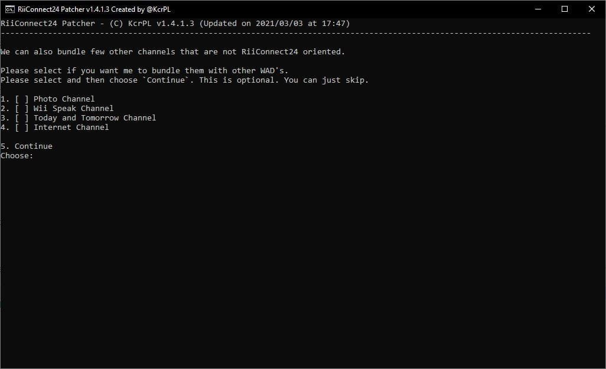

RiiConnect24
Jeśli potrzebujesz pomocy z czymkolwiek związanym z tym poradnikiem, dołącz do do serwera Discord RiiConnect24 (wsparcie też dostępne po polsku!!) albo wyślij e-maila do [email protected].

RiiConnect24 jest serwisem, który pozwala Ci korzystać z już niewspieranego serwisu jakim jest WiiConnect24. Pozwala on korzystać z News Channel, Forecast Channel, Everybody Votes Channel jak i również Check Mii Out Channel oraz Wii Mail.
This guide is for regular Wiis only.
- Podążaj za tym poradnikiem jeżeli chcesz zainstalować RiiConnect24 na vWii (Tryb Wii na Wii U).
- Follow this tutorial if you’d like to install RiiConnect24 on Dolphin Emulator.
DO NOT INSTALL RIICONNECT24 ON A WII MINI! It will not work and it will brick the system.
Będziesz potrzebował:
- Karta SD lub urządzenie USB
- Konsola Wii z połączeniem Internetowym
- Komputer
- Patcher RiiConnect24 (Windows, MacOS i Linux)
Instrukcje
Sekcja I - Używanie Patcher’a RiiConnect24
Jeśli nie możesz uruchomić Patchera RiiConnect24, dołącz do serwera RiiConnect24 na Discordzie (zalecane) albo skontaktuj się do [email protected] dla pomocy.
- Kliknij na link powyżej, aby przejść do strony GitHub gdzie znajduje się patcher.
- Pobierz
RiiConnect24Patcher.bat, jeśli korzystasz z systemu Windows, iRiiConnect24Patcher.shjeśli korzystasz z systemu Unix - Uruchom na Windows’ie
RiiConnect24Patcher.bat. Na systemach Unix, otwórz Terminal, i napiszbash< potem przeciągnijRiiConnect24Patcher.shdo terminalu i kliknij enter. Powinno to wyglądać tak:bash RiiConnect24Patcher.sh. - Naciśnij 1 aby wybrać “
Start” oraz potwierdź swój wybór naciskającENTER. (NOTKA: Te zrzuty ekranu są z Patchera na Windows.)
- Wybierz urządzenie, jakie będziesz patchował.

- Dla tego poradnika, wybierz “
Zainstaluj RiiConnect24 na twoim Wii”
- Wybierz “
Ustawienia ekspresowe (Zalecane)”. Patcher Ci da wszystko co potrzebujesz.
- Wybierz swój region.

- Skoro już tu jesteś, Patcher RiiConnect24 może dodatkowo zainstalować inne opcjonalne kanały które nie używają RiiConnect24.
[X]reprezentuje opcje które są zaznaczone. Po prostu kliknij 5 iENTER, jeśli nie jesteś zainteresowany.  - Podłącz twą kartę pamięci albo dysk USB do swojego komputera i wybierz “
1”.
- Jeżeli Twoje urządzenie zostało pomyślnie wykryte, wybierz “
1”. Jeśli nie, upewnij się, że istnieje folder o nazwieappsna twojej karcie pamięci lub dysku USB, i spróbuj ponownie.
- Bądź cierpliwy…

- Po zakończeniu, będziemy wdzięczni jeśli wyślesz nam anonimową opinie. Jeśli nie chcesz, wyjdź z patchera. Wszystkie pliki powinny być na karcie pamięci.


- Jeśli patcher nie skopiował wszystkiego automatycznie do twojej karty pamięci lub dysku USB, skopiuj foldery
WADiappsobokRiiConnect24Patcher.batdo karty pamięci lub dysku USB.
Sekcja II - Instalacja WAD’ów
Teraz będziesz instalował zpatchowanego IOS’a i kanały WAD które są potrzebne do korzystania z RiiConnect24.
- Używając Twojego kontrolera, przejdź do
WAD Manageroraz wejdź do folderuwad. - Otwórz Homebrew Channel na Twoim Wii.
- Po ukońzconej pomyślnie instalacji, naciśnij przycisk HOME aby wyjść do Homebrew Channel.
- Używając Twojego kontrolera, przejdź do
WAD Manageroraz wejdź do folderuwad. - Zaznacz wszystkie WAD’y w folderze, naciskając przycisk +, by je zaznaczyć. Kiedy wszystkie WAD’y są wybrane, kliknij A podwójnie by zainstalować WAD’y.
- Jeśli otrzymasz błąd mówiący, że jest zainstalowany ten sam kanał z wyższym numerem wersji (błąd -1035), wróć do menu wybrania WAD’ów, kliknij przycisk -, na zaznaczonym WAD’zie żeby go odinstalować, potem spróbuj zainstalować znowu.
- Po ukońzconej pomyślnie instalacji, naciśnij przycisk HOME aby wyjść do Homebrew Channel.
Sekcja II - Patchowanie nwc24msg.cfg
Teraz zpatchujesz swój plik nwc24msg.cfg który jest potrzebny to używania Wii Mail.
- Korzystając z Homebrew Channel, uruchom RiiConnect24 Mail Patcher.
- Patchowanie nwc24msg.cfg powinno potrwać tylko kilka sekund. Po ukończeniu, naciśnij przycisk HOME aby wyjść.
Jeśli nie mogłeś poprawnie zpatchować nwc24msg.cfg, dołącz do serwera Discord RiiConnect24 (rekomendowane) lub napisz e-maila do [email protected] dla pomocy.
Sekcja IV - Łączenie
Starting June 16th, 2022 the RiiConnect24 DNS changes. Read more: here.
You will now set your DNS to our servers. This is optional but it’s recommended, because it enhances the use of RiiConnect24 and Wiimmfi by making some other features available.
- Wejdź do
ustawień Wii - Przejdź do
Wii Settings - Przejdź do
drugiej strony, oraz wybierzInternet. - Przejdź do
Connection Settings. - Wybierz twoje obecne połączenie.
- Przejdź do
Change Settings. - Przejdź do
Auto-Obtain DNS(Nie IP Address) oraz wybierzNo, oraz kliknij naAdvanced Settings. - Type in
167.86.108.126as the primary DNS. - Type in
1.1.1.1as the secondary DNS. - Wybierz
Confirm, oraz wybierzSave. - Wybierz
OKaby przeprowadzić test połączenia Internetowego. - Jeżeli połączenie było pomyślne, wybierz
Noaby pominąć sprawdzenie aktualizacji systemu. - Przejdź do
WiiConnect24oraz potemWiiConnect24oraz upewnij się, że jest włączone. - Cofnij się oraz przejdź do
Standby Connectioni upewnij się, że jest włączone. - W menu
Slot Illumination, zalecamy abyś ustawił to naDim (ciemne)lubBright (jasne, jest to jednak opcjonalne. - Na koniec, przejdź do
Internetoraz naciśnij naUser AgreementslubAgreement/ContactorazYes. Przeczytaj ten dokument.
It’s common to get error FORE000006 on the Forecast Channel after installing RiiConnect24. If you get it, make sure your Wii’s to the correct date and time, then wait no more than an hour and it may start working. [If you still get error FORE000006 or if you get NEWS000006, you will need to delete your SYSCONF with RC24-Clear-Tool].
You will get error 268503 when loading the Nintendo Channel. This is normal. You can bypass the error by pressing OK.
If you get error 107245, then you have not installed the patched IOS. Make sure you install IOS31 and IOS80 with Wii Mod Lite, along with any other patched WADs.
If you get error 107304 or you see Nintendo’s User Agreement without RiiConnect24’s logo, that means your ISP (Internet Service Provider) or network is blocking the use of a DNS. You can set Auto-Obtain DNS to On to solve this. RiiConnect24 will still work without it. Or, you can use our DNS-Server program.
If you’re getting errors such as WiiConnect24 and Wii Shop Channel currently not being offered in your country, go to Wii Settings -> Last Page -> Country and change it to United Kingdom. You will get this error when using a country that we don’t support. Contact us at [email protected] if you need more help.
Przejdź do strony przeznaczonej instalacji Wiimmfi
Wiimmfi pozwala Ci na granie w gry online po zakończeniu wsparcia serwisu Nintendo Wi-Fi Connection. Jest to opcjonalny krok.
Continue to WiiLink
WiiLink lets you use the Japanese-exclusive channels known as Wii no Ma and Digicam Print Channel. Jest to opcjonalny krok.
Przejdź do spisu stron
Mamy wiele innych poradników, które mogą Ci się przydać.